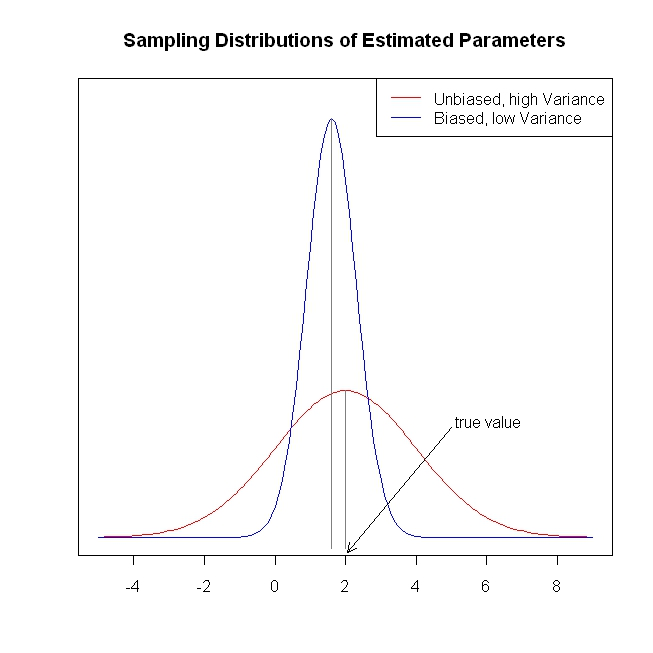

machine learning¶
- This modelling problem can be described by the following:
- Continuous regression (estimating permittivity and conductivity)
- ∼ 2-12 features as found from the preprocessing stage
- Training data on the order of 1000s of simulations
Two techniques are found to be suitable candidates and will be discussed below: neural network regression, and elastic net regression. All techniques are implemented through the open-source toolbox tensorflow.
As stated earlier, the machine learning algorithm — represented by a function \(g\) — aims to generate functions which can map the denser spaces from the preprocessing stage \(\vec{Y}\) into the final estimate of dielectric properties:
neural networks¶
Neural networks loosely model the functionality of biological neurons, whereby neurons respond to an input stimulus with some corresponding output defined by the activation function \(\chi\) and neuron weights \(w\). We could start by examining a single neuron with several inputs:
{kind=link}
The output of the neuron relates to the sum of each of the inputs multiplied by their weight for that neuron. The activation function is then applied to this sum, as well as some bias \(\theta\). If we have multiple neurons \(N\) in a layer with \(M\) inputs, there will be \(N\times M\) weights to determine. With multiple layers of neurons, there will also be weights associated between layers.
A single hidden layer is sufficient to model any arbitrary function. However, the advantage of multiple hidden layers is to reduce incidence of local minima, and to create more abstract models. Any model with two or more hidden layers is referred to as “deep learning”.
In the case of dielectric property estimation, the input consists of the preprocessed features \(\vec{Y}\) and the separation distance \(d\). We use two layers of neurons (hidden layers), with \(p\) and \(q\) number of neurons. There are two continuous outputs: permittivity and conductivity. The neural network configuration is shown below, for an example using time of flight and energy analysis.
{kind=link}
We use rectified linear units (ReLU) as the activation function as shown below. During the process of learning (backpropagation), many partial derivatives are computed. The ReLU has the advantage of having a derivative which exists and is easy to compute:
The process of “learning” is simply determining the set of weights which produce the least error at the output with the training data. To train the network, we need a measure of error denoted \(SS_{nn}\). This is defined simply as the squared error of the permittivity and conductivity terms:
$$ SS_{nn} = (\epsilon_{est}-\epsilon_{true})^2 + (\sigma_{est}-\sigma_{true})^2 $$
We are seeking the coefficients in the neurons which minimizes this error in our training data. The algorithm we use is gradient descent. This takes advantage of the chain rule, where we can find the change in error according to the change in each neuron.
In training the network, we modify the weights of each neuron “downhill” towards minimum error, moving an amount relating to the assigned learning rate. This is done successively with batches of training data, which are selected at random from the entire dataset. This ensures the chosen weights reflect the entire dataset.
{kind=link}
This network is implemented in TensorFlow, with training performed on GPU (NVIDIA Tesla P100 and GeForce 1060) for improved performance. As the training is performed, a measure of loss in the training dataset provides an estimate of the goodness of fit. Testing data is always applied after training to determine the quality of the network.
elastic net regression¶
Elastic net regression is a flexible method which combines strengths from several other models: ordinary least squares (OLS) regression, ridge regression, and LASSO regression. One might wonder what the issue is with ordinary least squares regression. In fact, the Gauss-Markov theorem states that of all unbiased estimators, OLS has the minimum variance in coefficient estimation. It is interesting to question, though, whether this is the best method purely in terms of mean-squared error (MSE). For instance, if we introduce a biased estimator - i.e. the mean of the estimated coefficients is offset from the true mean - we can reduce variance. This is shown in the figure below:
{kind=link}
So even though the estimator is biased, the mean squared error can actually be less than the OLS case. Ridge and LASSO achieve this by introducing penalty terms for the complexity of the model, where the complexity is determined by the l2 and l1 norms of the model coefficients, respectively. Elastic net combines these two penalty terms, as shown below:
If we have multiple linear predictors with coefficients \(\beta\), elastic net regression can determine the dominant predictors. For instance, permittivity estimation is dominated by the transmission coefficient phase, and conductivity estimation is dominated by the transmission coefficient magnitude. This is therefore a useful method for combining multiple forms of information.